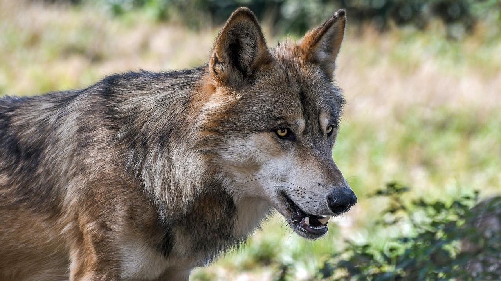

Scelta 1: Andare in una foresta senza sapere cosa succede
Nella foresta trova il lupo che aveva mangiato il giorno stesso il Cappuccetto Rosso; Christian decide di combattere il lupo ma si accorge di non avere armi e quindi con i suoi poteri magici fa apparire una spada
